SIMSSA Workshop X
Posted by neshraghi on November 07, 2016
The tenth SIMSSA Workshop, hosted by the Centre for Interdisciplinary Research in Music Media and Technology CIRMMT at McGill University, took place on Saturday, September 24, 2016. These workshops started out as demonstrations of current research interests and technologies being developed by graduate students and professional scholars. Bringing together experts from many different disciplines, including music technology, music theory, music cognition, musicology, and others, SIMSSA Workshops continue to demonstrate cutting-edge advancements in the field of music today.
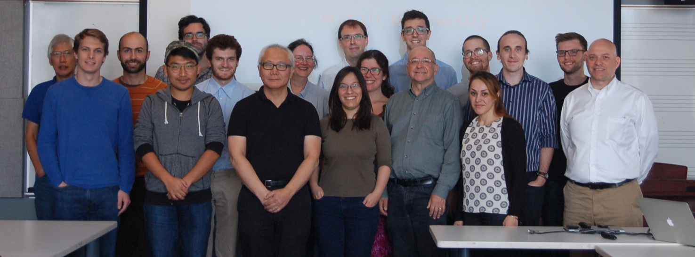
Ichiro Fujinaga – Introduction to SIMSSA Workshop X
The morning began with an introduction from Professor Ichiro Fujinaga, the principal investigator of the SIMSSA grant. He discussed the history of previous SIMSSA workshops, previous visiting scholars to SIMSSA—such as Leigh van Handel, Jorge Calvo-Zaragoze, and many more—and papers and talks generated by the SIMSSA community that staggeringly number 45 (not counting those that are forthcoming). Some of the big news that Professor Fujinaga shared was that SIMSSA has received a substantial grant from FRQSC for the Music Information Research and Infrastructure (MIRAI) Project for several years to come.
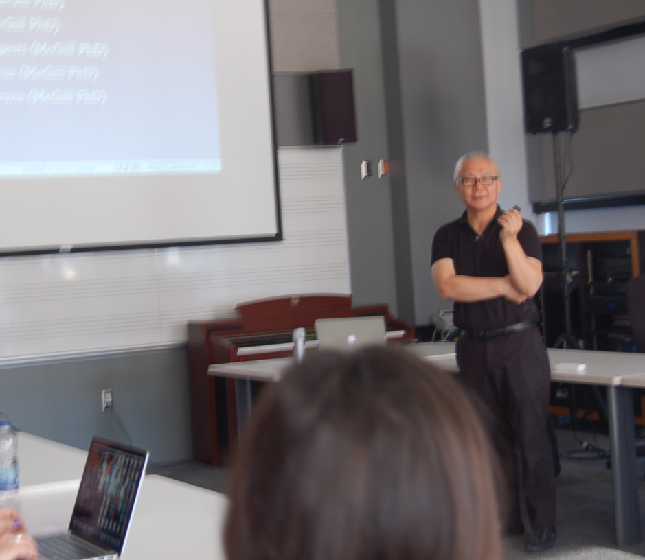
Alex Morgan – What’s New in VIS 3.0
The first full-length presentation was given by Alex Morgan, a recent graduate of the doctoral program in music theory at McGill. Alex presented on a number of new features in the VIS-Framework, including new indexers, increased stability, extensibility, performance, and usability.
In terms of stability, Alex removed the most complex and problematic components of VIS which were arising from outdated test pieces. Several new indexers were implemented: the cadence indexer, which identifies events in the approach to a fermata; the over-bass indexer, which finds vertical intervals over melodic bass motion; the contour indexer, which represents contours of any length with integers; the active-voices indexer, which counts the number of sounding voices at any given moment; the multi-stop indexer, which indexes all notes and rests including polyphonic multiple stops; and the rewrite-repeat indexer, which offers a more efficient way of filtering consecutive repeated events.
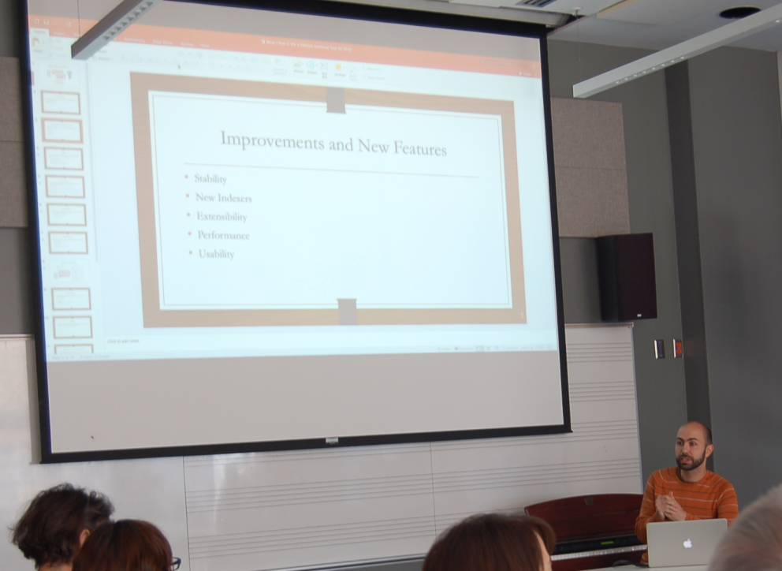
In terms of extensibility, Alex removed lots of unused code and consolidated all file importations to one place in order to help new programmers. In terms of performance, the newest update to VIS allows for faster file importation and faster indexing. This is thanks to the use of iterative caching. For example, when someone uses an indexer, only the final results for that indexer are summoned; all of the intermediary procedures to get to that final result are processed and saved in the background.
Another benefit of iterative caching is that users can now obtain aggregated results from VIS. This means you can run a query on a list of pieces, or even an entire directory of pieces, as opposed to getting results piece by piece. Finally, with usability, Alex made it is easier to figure out how to set up and get started with VIS.
Claire Arthur – Identifying Structural Tones in Classical versus Popular Music
The next paper was presented by Claire Arthur, a specialist in the field of computer-aided music analysis, and the SIMSSA Project’s newest postdoctoral fellow. Before coming to McGill, she completed her doctoral studies at The Ohio State University under the supervision of David Huron.
Claire began by asking: “How can we determine harmony from melody?” Thanks to the systematic treatment of non-harmonic tones in music of the common practice, we already have a good method for determining harmony from melody in this repertoire. Can we develop a similar method for melodies in popular music?
She set out to compare melodies from four different corpora—Bach chorales, Haydn string quartets (main themes only), Mozart string quartets (main themes only), and Beethoven piano sonatas (main themes only)—with pop songs from the McGill Billboard Project.
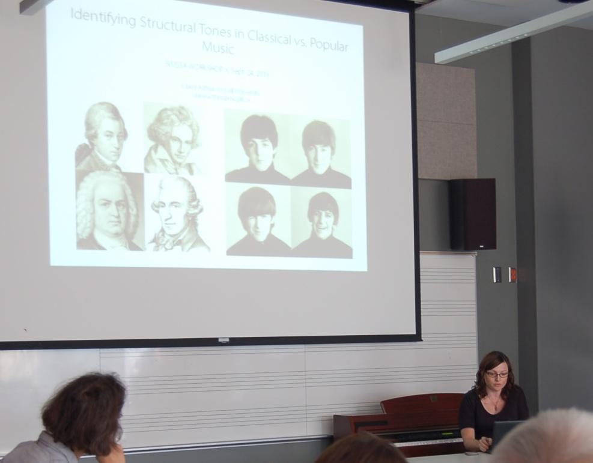
Ultimately, she determined that scale degrees 1, 3, and 5 were most likely to be treated as chord tones in melodies from the four common-practice corpora, while songs from the Billboard corpus showed an increase in the number of chord tones on scale degrees 2 and 4.
Alex Parmentier – Musiclibs and Tripoli: IIIF in Action!
Next, we heard from Alex Parmentier, an undergraduate student in computer science at McGill, and major SIMSSA software developer. Alex’s talk focussed on one of our largest ongoing projects: Musiclibs, or “Google Books for music.”
Musiclibs is a giant database of scores and manuscripts from libraries and archives around the world. It is built on the International Image Interoperability Framework IIIF, a set of rules and practices for sharing, distributing, and requesting images. Libraries everywhere are rapidly adopting this standard to make their digitized resources accessible and open.
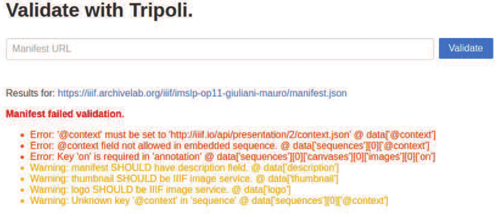
IIIF allows participating institutions to continue to host and serve their own images, while Musiclibs provides a way to index and search through those images all at once. IIIF also specifies a set of parameters which can be added to a request in order to modify (crop, rotate, desaturate, etc.) an image in some way before serving it.
The IIIF API is very useful, but it is also very difficult to follow. So, in order to make things easier for participating institutions, the Tripoli validator was invented. This tool is essentially a spell checker for documents that must conform to the IIIF API. Not only does Tripoli produce informative error messages and warnings, but it can also automatically correct simple errors when validating a document.
Emily Hopkins and Sam Howes – Measuring Polyphony: Using the Rodan Client to Analyze Stylistic Change in the French Motet Repertory, c. 1300–1350
The next presentation was given by Emily Hopkins, who recently completed a master’s degree in musicology at McGill and now works as the project manager for the SIMSSA Project, and Sam Howes, a current Ph.D. student in music theory at McGill. Over the past year, Emily and Sam have been working on a corpus study of early fourteenth-century French polyphony under the supervision of Karen Desmond, who recently completed a postdoctoral fellowship at McGill and is now teaching at Brandeis University.
Karen hypothesized that the distribution of different types of sonorities could help clarify the metrical complications for which this repertoire is famous. The project used the Rodan Client, a graphical user interface for the VIS-Framework, to measure and tabulate all of the vertical (i.e., harmonic) intervals in 64 different motets found in sources from 1314 to 1370.
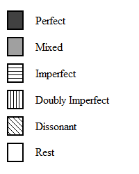
Building on the research of Sarah Fuller and Jared Hartt, intervals were sorted into five sonority categories (perfect, mixed, imperfect, doubly imperfect, and dissonant) and each motet was analyzed to reveal which types of sonorities appeared most frequently at the beginnings of different metrical groupings. These results were visualized using custom-built Python scripts to show the distribution of sonority types in scale representations of musical time and space. The graph below shows sonorities on every downbeat in a three-voice motet. The findings of this project will appear in a forthcoming article within the next year.
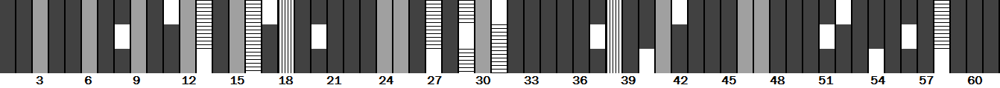
Malcolm Sailor – A Corpus Study of Renaissance Dissonance Treatment
The next presentation we heard was given by Malcolm Sailor, a current Master’s student in Music Theory here at McGill. Malcolm discussed dissonance treatment from mid-fifteenth-century composers in Dufay and Ockeghem up through composers of the mid-sixteenth century such as Palestrina and Victoria. Malcolm’s corpora were assembled from both the ELVIS Database and the Josquin Research Project.
Using a program developed here at McGill by Andie Sigler, which identifies incorrectly approached or resolved dissonances according to contrapuntal rules set forth by Peter Schubert and Knud Jeppesen, Malcolm investigated various types of dissonances in music of the fifteenth and sixteenth centuries.
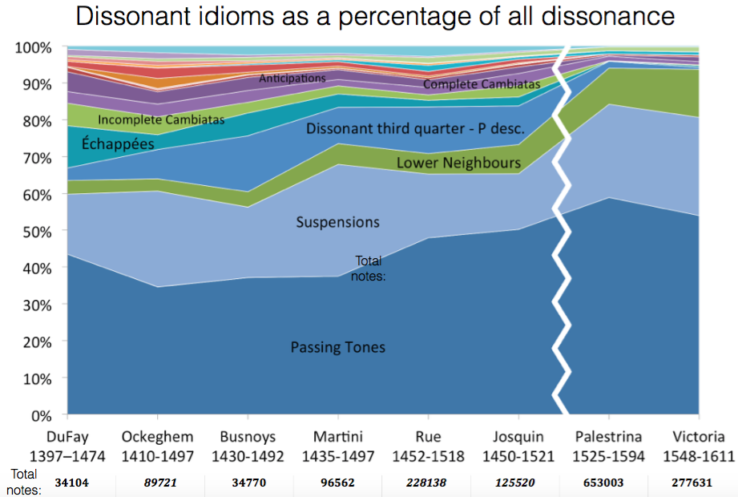
Looking at both fifteenth- and sixteenth-century counterpoint, Malcolm was able to conclude that three main types of dissonances came to define the sixteenth century (passing tones, neighboring tones, and suspensions), while many other types of dissonances make up the majority of those found in the fifteenth century. Taking this one step further, Malcolm used dissonance treatment as a means of solidifying attribution (in the above image the Josquin pieces Malcolm used from the Josquin Research Project were those with the highest level of attribution to the composer). Stay tuned to the SIMSSA Blog in the coming months for more on Malcolm’s research and methodologies!
David Garfinkle – Studies in Melodic Search: The Similarity Algorithms of C-BRAHMS
The next presentation, given by an undergraduate student in music at McGill, focused on similarity algorithms for melodic searches. The ultimate goal of David Garfinkle’s project is to merge these melodic search algorithms into the VIS-Framework.
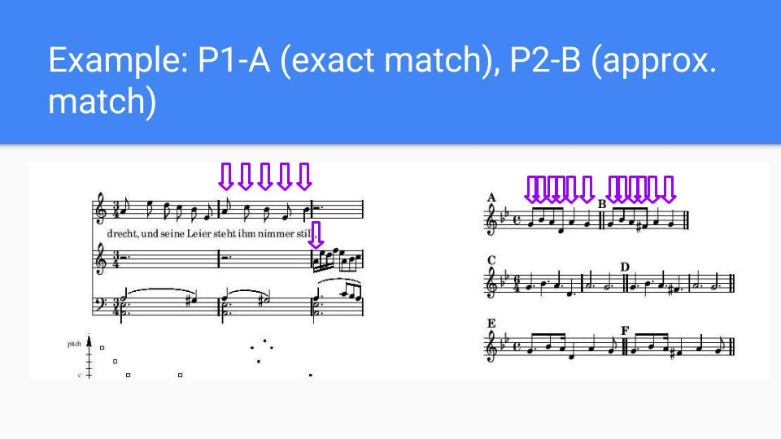
This project is called VIS: Ohrwurm and refers to the Python scripts that David has written, which were inspired by the methods of C-BRAHMS. C-BRAHMS is a research group that has won melodic-search-algorithm competitions in the past. There are three types of algorithms that David will be implementing: those that match pitch content but do not account for timeshifting (P); those that scale with time, or include rhythmic values (S); and those that you can warp to tailor to specific types of augmentation or diminution (W).
As of right now, David has only begun implementing the P-series algorithms: P1 is an exact match; P2 is an approximate match; and P3 lines up the best possible matches. He will be implementing S-series algorithms (S1 and S2) and W-series algorithms (W1 and W2) in the near future.
Martha Thomae – MEI Translator: CMN to Mensural
Next, we heard from Martha Thomae, a master’s student in the music technology program at McGill. Also working under the supervision of Karen Desmond, Martha has been developing a tool that can convert MEI files (symbolic music files created with Sibelius, MuseScore, or other music notation software) from common music notation (CMN) to mensural notation.
Mensural notation was in use across Europe from the end of the thirteenth century up to the beginning of the seventeenth century. Many modern editions of music from this time period do away with mensural notation in favour of common music notation, simply because it is easier to read. For computers too, mensural notation is difficult to read because the same noteshape (e.g., the breve) often has different rhythmic values (perfect or imperfect) depending on the notes or symbols that come before and after it.
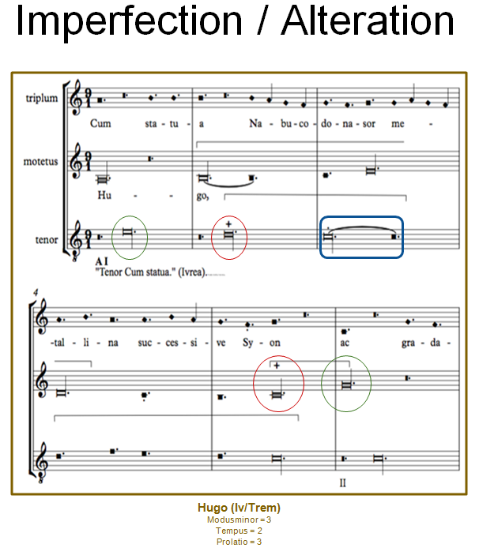
This process of changing note values—better known as alteration—can be described by a detailed set of rules. Martha’s MEI translator treats these rules algorithmically to produce a version of the MEI file that maintains both the authentic noteshapes and their correct rhythmic values. For more information on the Mensural MEI Translator, including examples of rendered MEI files, check back soon for an interview with Martha!
Justin Bell – Improving the DIAMM Search Interface
Later in the day, we heard a presentation from Justin Bell, a software developer in the DDMAL lab at McGill. He brought us up to date on some recent changes to the Digital Image Archive of Medieval Music DIAMM.
Justin has been working to make the DIAMM search interface faster and more intuitive. To prove his point, he showed a short video of two different users searching for the same facsimile, with one person using the old DIAMM interface, and the other using the new interface. Needless to say, the new interface proved to be much faster and easier to follow.
Justin has more updates in mind for DIAMM, including a better browsing interface and savable sessions. He also plans to develop a DIAMM app in the near future, so check back soon for more news!
Reiner Krämer – The Supplementum: Style, Structure, and Evolution
Next was a presentation given by one of SIMSSA’s postdoctoral fellows, Reiner Krämer, on codifying supplementa in the music of the fifteenth and sixteenth centuries. This project is one that ties in with a larger project that Reiner is working on: the development and application of a mode-finding algorithm within a controlled dataset—namely, the pieces contained within Heinrich Glarean’s Dodecachordon (1547).
For this presentation, which examined the style, structure, and evolution of supplementa, Reiner examined motets from 41 composers written between 1480 and 1603. A supplementum is essentially defined as a prolonged cadential extension that occurs after a final cadence at the end of a section or piece.
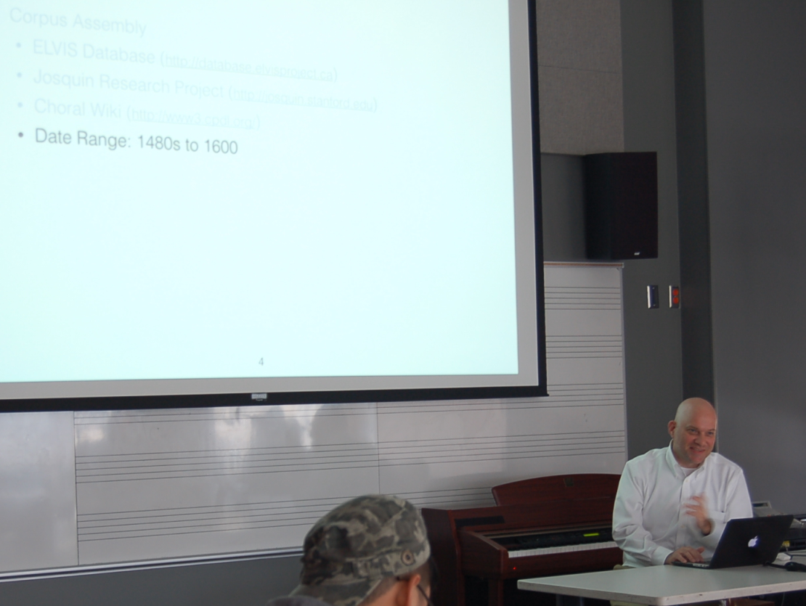
Within his corpus for this study—motets taken from the ELVIS Database—Reiner found that around 65% of motets end with a supplementum. From this, there were three types of model supplementa that were observed: those based on a primary pitch in a single stationary voice; those based on two stationary voices; and those based on more than two stationary voices. Stay tuned to the SIMSSA Blog in the coming months for an in-depth look at Reiner’s research!
Cory McKay – jSymbolic 2: New Developments and Research Opportunities
The final presentation of the day was given by Cory McKay of Marianopolis College, a current CIRMMT member and long-time SIMSSA collaborator. Cory unveiled the new version of his java-based data-mining software for symbolic music: jSymbolic 2.
This software extracts “features” from a musical work or corpus of works. These features characterize a musical work in a simple way, usually with a single numeric value, e.g., the number of melodic tritones, or with a “vector” of related values, e.g., a pitch class histogram (see bar graphs).
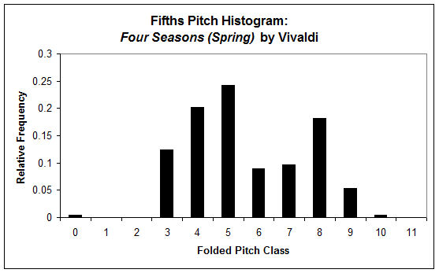
jSymbolic offers over one hundred different features to search for, while also encouraging users to create and submit their own features. Because jSymbolic can be used to query enormous collections of music, it can be implemented as a sort of search algorithm, e.g., in collection X, find all pieces with no more than Y amount of chromaticism and Z amount of parallel motion. This makes for a productive first step in any large-scale corpus analysis.
jSymbolic 2 incorporates statistical analysis and visualization tools and is ideal for studying the empirical musical importance of various features, e.g., features based on instrumentation were most effective for distinguishing between genres (McKay & Fujinaga 2005).
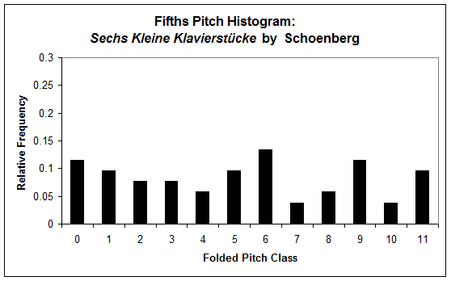
In addition, machine learning algorithms can be implemented to classify or cluster music based on its features; this learning can be supervised or unsupervised. Feature data from unattributed works can be superimposed on a training set of securely attributed works in order to identify or suggested composers for the unattributed works.
You can run jSymbolic from your command-line interface, or through the built-in user interface. The feature extractor accepts both MIDI and MEI file types. It also includes an extremely detailed manual describing all of the features. If you are interested in trying out jSymbolic for yourself, you can visit the GitHub repository or the Sourceforge page.